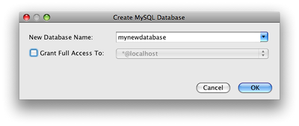

Apache NetBeans
Apache NetBeansLatest release
Estabelecendo Conexão com um Banco de Dados MySQL
| This tutorial needs a review. You can edit it in GitHub following these contribution guidelines. |
Este documento demonstra como configurar uma conexão com um banco de dados MySQL no NetBeans IDE. Uma vez conectado, você pode começar a trabalhar com o MySQL no Explorador do Banco de Dados do IDE criando novos bancos de dados e tabelas, preenchendo tabelas com dados e executando consultas SQL em conteúdo e estruturas de bancos de dados. Este tutorial é direcionado a iniciantes com um conhecimento básico do gerenciamento de bancos de dados, que desejam utilizar seu conhecimento para trabalhar com o MySQL no NetBeans IDE.
O MySQL é um sistema de gerenciamento de banco de dados relacional de código-fonte aberto (RDBMS) geralmente usado em aplicações Web devido à sua velocidade, flexibilidade e confiabilidade. O MySQL emprega a linguagem SQL, ou Structured Query Language, para acessar e processar os dados contidos em bancos de dados.
Duração esperada: 30 minutos
Para seguir este tutorial, os recursos e softwares a seguir são necessários.
| Software ou Recurso | Versão Necessária |
|---|---|
Java 7.2, 7.3, 7.4, 8.0 |
|
Versão 7 ou 8 |
|
Servidor de banco de dados MySQL |
| este tutorial presume que você já possui o RDBMS MySQL instalado e configurado no computador. Se você estiver instalando pela primeira vez, consulte a documentação oficial do MySQL para obter ajuda. Você também pode consultar Configurando o Servidor de Banco de Dados MySQL no Sistema Operacional Windows. |
Configurando as Propriedades do Servidor MySQL
O NetBeans IDE vem com suporte para o RDBMS MySQL. Antes que você possa acessar o Servidor de Banco de Dados MySQL no NetBeans IDE, você deve configurar as propriedades do Servidor MySQL.
-
Clique com o botão direito do mouse no nó Banco de Dados na janela Serviços e escolha Registrar o Servidor MySQL para abrir a caixa de diálogo Propriedades do Servidor MySQL.

-
Confirme se o nome e a porta do host do servidor estão corretos.
Observe que o IDE insere localhost como o nome de host de servidor default e 3306 como o número de porta de servidor default.
-
Insira o nome de usuário Administrador (se não estiver exibido).
| você precisa de acesso administrativo para poder criar e remover bancos de dados. |
-
Insira a senha do Administrador. O default é definido como em branco.
| uma senha em branco também pode ser uma senha. |
-
Clique na guia Propriedades de Admin na parte superior da caixa de diálogo.
A guia Propriedades de Admin é então exibida, permitindo que você insira informações para controlar o servidor MySQL.
-
No campo Caminho/URL para ferramenta admin, digite ou navegue para o local da aplicação de administração do MySQL como a Ferramenta admin de MySQL, PhpMyAdmin, ou outras ferramentas de administração baseadas na Web.
mysqladmin é a ferramenta de administração do MySQL encontrada na pasta bin do diretório de instalação do MySQL. Ela é uma ferramenta de linha de comandos e não é ideal para uso com o IDE.
|
Digite argumentos para a ferramenta admin no campo Argumentos.
-
Em Caminho para o comando iniciar, digite a localização do comando iniciar do MySQL ou navegue até ele. Para encontrar o comando iniciar, procure
mysqldna pastabindo diretório de instalação do MySQL.
| o binário recomendado para Unix e NetWare é ` mysql_safe`. O comando iniciar também pode variar se o MySQL tiver sido instalado como parte de uma instalação AMP. |
Digite argumentos para o comando iniciar no campo Argumentos.
-
No campo Caminho para o comando interromper, digite a localização do comando Interromper do MySQL ou navegue até ele. Geralmente, é o caminho para o
mysqladminna pastabindo diretório de instalação do MySQL. Se o comando formysqladmin, no campo Argumentos, digite-u root stoppara conceder permissõesrootpara interromper o servidor. -
Quando você terminar, a guia Propriedades de Admin deverá ter aparência similar à seguinte figura. Se estiver satisfeito com a configuração, clique em OK.

Iniciando o Servidor MySQL
Antes que você possa se conectar a um Servidor de Banco de Dados MySQL, certifique-se de que ele esteja sendo executado no computador. Se o servidor do banco de dados não estiver conectado, você verá (disconnected) ao lado do nome de usuário no nó MySQL Server, na janela Serviço, e não poderá expandir o nó.
Para conectar o servidor do banco de dados, confirme se o Servidor de Banco de Dados MySQL está em execução na máquina, clique com o botão direito do mouse no nó Bancos de Dados > MySQL Server na janela Serviços e escolha Conectar. Talvez você seja solicitado a fornecer uma senha para conectar-se ao servidor.

Quando o servidor estiver conectado, você poderá expandir o nó do MySQL Server e exibir todos os bancos de dados MySQL disponíveis.
Criando e Estabelecendo Conexão à Instância do Banco de Dados
Uma forma comum de interagir com banco de dados é usando um editor SQL. O NetBeans IDE possui um mecanismo Editor SQL para esta finalidade. O Editor SQL geralmente pode ser acessado por meio da opção Executar Comando do menu de contexto do nó da conexão (ou dos nós filhos do nó da conexão). Agora que está conectado ao servidor MySQL, você pode criar uma nova instância de banco de dados usando o Editor SQL. Para a finalidade deste tutorial, crie uma instância chamada MyNewDatabase :
-
Na janela Serviços do IDE, clique com o botão direito do mouse no nó Servidor MySQL e escolha Criar Banco de Dados. A caixa de diálogo Criar Banco de Dados MySQL é aberta.
-
Na caixa de diálogo Criar Banco de Dados MySQL, digite o nome do novo banco de dados. Será utilizado
MyNewDatabasepara este tutorial. Deixe a caixa de seleção desmarcada neste momento. 
-
| também é possível conceder acesso total a um determinado usuário. Por default, somente o usuário admin possui as permissões para realizar determinados comandos. A lista drop-down permite que você designe essas permissões a um usuário específico. |
-
Clique em OK.
O novo banco de dados é exibido no nó do Servidor MySQL na janela Serviços.
-
Clique com o botão direito do mouse no novo nó do banco de dados e escolha Conectar no menu pop-up para abrir a conexão para o banco de dados.
As conexões do banco de dados que estão abertas são representadas por um nó de conexão completo ( ) na janela Serviços.
) na janela Serviços.
Criando Tabelas do Banco de Dados
Agora que você se conectou a MyNewDatabase , pode começar a explorar como criar tabelas, preenchê-las com dados e modificar os dados mantidos nas tabelas. Isso permite que você observe mais de perto a funcionalidade oferecida pelo Explorador do Banco de Dados, assim como o suporte do NetBeans IDE para arquivos SQL.
``MyNewDatabase`` está vazio no momento. No IDE, é possível adicionar uma tabela de banco de dados usando a caixa de diálogo Criar Tabela ou inserindo uma consulta SQL e executando-a diretamente do Editor SQL. Aqui, você pode explorar ambos os métodos:
Usando o Editor SQL
-
No Explorador do Banco de Dados, expanda o nó da conexão
MyNewDatabase( ) e observe que há três subpastas: Tabelas, Views e Procedimentos.
) e observe que há três subpastas: Tabelas, Views e Procedimentos. -
Clique com o botão direito do mouse na pasta Tabelas e escolha Executar Comando. Uma tela em branco é aberta no Editor SQL na janela principal.
-
No Editor SQL, digite a seguinte consulta. Esta é uma definição da tabela
Consultorque você irá criar.
CREATE TABLE Counselor (
id SMALLINT UNSIGNED NOT NULL AUTO_INCREMENT,
firstName VARCHAR (50),
nickName VARCHAR (50),
lastName VARCHAR (50),
telephone VARCHAR (25),
email VARCHAR (50),
memberSince DATE DEFAULT '0000-00-00',
PRIMARY KEY (id)
);| consultas formadas no Editor SQL faz parsing em SQL. A linguagem SQL utiliza regras de sintaxe estritas com as quais você deve estar familiarizado ao trabalhar no editor do IDE. Na execução de uma consulta, um feedback do mecanismo SQL é gerado na janela de Saída indicando se a execução foi ou não bem-sucedida. |
-
Para executar a consulta, clique no botão Executar SQL (
 ) na barra de tarefas na parte superior (Ctrl-Shift-E), ou clique com o botão direito do mouse dentro do Editor de SQL e escolha Executar Instrução. O IDE gera a tabela
) na barra de tarefas na parte superior (Ctrl-Shift-E), ou clique com o botão direito do mouse dentro do Editor de SQL e escolha Executar Instrução. O IDE gera a tabela Consultorno banco de dados, e você recebe uma mensagem similar à seguinte na janela de Saída.

-
Para verificar as alterações, clique com o botão direito do mouse no nó Tabelas no Explorador do Banco de Dados Explorer e escolha Atualizar. A opção Atualizar atualiza o componente UI do Explorador do Banco de Dados para o status atual do banco de dados especificado. Observe que o novo nó da tabela
Consultor( ) é exibido agora em Tabelas no Explorador do Banco de Dados. Se você expandir o nó da tabela você pode ver as colunas (campos) você criou, iniciando com a chave primária (
) é exibido agora em Tabelas no Explorador do Banco de Dados. Se você expandir o nó da tabela você pode ver as colunas (campos) você criou, iniciando com a chave primária ( ).
).

Usando a Caixa de Diálogo Criar Tabela
-
No Explorador do Banco de Dados, clique com o botão direito do mouse no nó Tabelas e escolha Criar Tabela. A caixa de diálogo Criar Tabela é aberta.
-
No campo de texto Nome da tabela, digite
Assunto. -
Clique em Adicionar Coluna.
-
No Nome da coluna, insira
id. SelecioneSMALLINTno tipo de dados na lista drop-down Tipo. Clique em OK.

-
Marque a caixa de seleção Chave Primária na caixa de diálogo Adicionar Coluna. Você está especificando a chave primária da tabela. Todas as tabelas de bancos de dados relacionais devem conter uma chave primária. Observe que quando a caixa de seleção Chave é marcada, as caixas de seleção Índice e Exclusivo são automaticamente marcadas e a caixa de seleção Nulo é desmarcada. Isso ocorre porque as chaves primárias são usadas para identificar uma linha exclusiva no banco de dados e por default formam o índice da tabela. Como todas as linhas precisam ser identificadas, as chaves primárias não podem conter um valor Nulo.
-
Repita esse procedimento adicionando as colunas remanescentes, como exibido na tabela a seguir.
| Chave | Índice | Nulo | Exclusiva | Nome da Coluna | Tipo de Dados | Tamanho |
|---|---|---|---|---|---|---|
[marcada] |
[marcada] |
[marcada] |
id |
SMALLINT |
0 |
[marcada] |
nome |
VARCHAR |
50 |
[marcada] |
descrição |
VARCHAR |
500 |
Está sendo criada uma tabela chamada Assunto que possuirá dados para cada um dos seguintes registros.
-
*Nome: *nome do assunto
-
*Descrição: *descrição do assunto
-
*ID do Consultor: *ID do consultor que corresponde a um ID da tabela Consultor

Certifique-se de que os campos na caixa de diálogo Criar Tabela correspondam aos exibidos acima e clique em OK. O IDE gera a tabela Assunto no banco de dados e você pode ver um novo nó da tabela Assunto () imediatamente exibido sob as Tabelas no Explorador do Banco de Dados.
Trabalhando com os Dados da Tabela
Para trabalhar com dados da tabela, você pode usar o Editor SQL no NetBeans IDE. Ao executar consultas SQL em um banco de dados, você pode adicionar, modificar e deletar dados mantidos em estruturas de bancos de dados. Para adicionar um novo registro (linha) à tabela Consultor , faça o seguinte:
-
Escolha Executar Comando da pasta Tabelas no Explorador do Banco de Dados. Uma tela em branco é aberta no Editor SQL na janela principal.
-
No Editor SQL, digite a seguinte consulta.
INSERT INTO Counselor
VALUES (1, 'Ricky', '"The Dragon"', 'Steamboat','334 612-5678', 'r_steamboat@ifpwafcad.com', '1996-01-01')-
Para executar a consulta, clique com o botão direito do mouse no Editor SQL e escolha Executar Instrução. Na janela de Saída, você pode ver uma mensagem indicando que a consulta foi executada com êxito.
-
Para verificar se o novo registro foi adicionado à tabela
Consultor, no Explorador do Banco de Dados, clique com o botão direito do mouse no nó da tabelaConsultore escolha Exibir Dados. Um novo painel Editor SQL é aberto na janela principal. Quando você escolhe Exibir Dados, é gerada automaticamente na região superior do Editor SQL uma consulta para selecionar todos os dados da tabela. Os resultados da instrução são exibidos em uma view em tabela na região inferior. Neste exemplo, a tabelaConsultoré exibida. Observe que uma nova linha foi adicionada com os dados que você acabou de fornecer da consulta SQL.

Executando um Script SQL
Outra forma de gerenciar dados de tabela no NetBeans IDE é executar um script SQL externo diretamente no IDE. Se foi criado um script SQL em qualquer outro lugar, será possível simplesmente abrí-lo no NetBeans IDE e executá-lo no Editor SQL.
Com a finalidade de demonstração, faça download do ifpwafcad.sql e salve-o no computador. Este script cria duas tabelas similares às que você acabou de criar acima ( Consultor e Assunto ) e preenche-as imediatamente com dados.
Como o script sobrescreve essas tabelas se elas já existirem, delete as tabelas Consultor e Assunto agora para que fique óbvio que novas tabelas são criadas quando o script é executado. Para deletar tabelas:
-
Clique com o botão direito do mouse nos nós de tabela
ConsultoreAssuntono Explorador do Banco de Dados e selecione Deletar. -
Clique em Sim na caixa de diálogo Confirmar Exclusão de Objeto. Observe que essa caixa de diálogo lista as tabelas que serão deletadas.
Quando você clica em Sim na caixa de diálogo Confirmar Exclusão de Objeto, os nós de tabela são automaticamente removidos do Explorador do Banco de Dados.
Para executar o script SQL em MyNewDatabase :
-
Escolha Arquivo > Abrir Arquivo no menu principal do IDE. No browser de arquivos, vá para o local onde você salvou
ifpwafcad.sqlanteriormente e clique em Abrir. O script se abre automaticamente no Editor SQL. 2. Certifique-se de que a conexão comMyNewDatabaseesteja selecionada na caixa drop-down Conexão na barra de ferramentas na parte superior do Editor.

-
Clique no botão Executar SQL (
) na barra de tarefas do Editor SQL. O script é executado no banco de dados selecionado e qualquer feedback é gerado na janela de Saída. -
Para verificar as alterações, clique com o botão direito do mouse no nó da conexão de
MyNewDatabasena janela Runtime e escolha Atualizar. A opção Atualizar atualiza o componente UI do Explorador do Banco de Dados para o status atual do banco de dados especificado. Observe que as duas novas tabelas do script SQL agora são exibidas como nós de tabela emMyNewDatabaseno Explorador do Banco de Dados. -
Escolha Exibir Dados do menu de contexto de um nó de tabela selecionada para ver os dados contidos nas novas tabelas. Dessa maneira, você pode comparar os dados tabulares com os dados contidos no script SQL para ver se eles coincidem. Envie-nos Seu Feedback
Consulte Também
Isto conclui o tutorial Estabelecendo Conexão um Banco de Dados MySQL. Este documento demonstrou como configurar o MySQL no computador e definir uma conexão com o servidor de banco de dados do NetBeans IDE. Ele também descreveu como trabalhar com o MySQL no Explorador do Banco de Dados do IDE criando novas instâncias de bancos de dados e tabelas, preenchendo tabelas com dados e executando consultas SQL.
Para tutoriais relacionados e mais avançados, consulte os seguintes recursos:
-
Criando uma Aplicação Web Simples Usando um Banco de Dados MySQL. Um tutorial de acompanhamento que demonstra como criar uma aplicação Web simples de duas camadas no IDE usando o banco de dados MySQL que você acabou de criar.